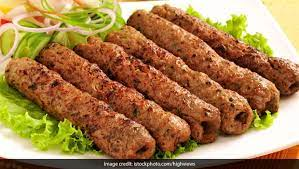

The name kuzhimanthi is a portmanteau of mandi and kuzhy,Malayalam word for the deep pit in which this dish has cooked
ALFAHAM
PRICE: 120 | 150 (20 % off)
Alfahm is an Arabic grilled chickenThis chicken recipe is very popular in the middle east as it marinated with Arabian spice and barbequed in charcoal grill
CHICKEN BIRIYANI
PRICE: 84 | 120 (30 % off)
Biryani is definitely a relatively mild Indian dish. If you were to put it on a hotness scale with 10 being ridiculously hot and 1 being mild.yammy!
BURGER
PRICE: 150 | 200 (25 % off)
According to the Food Lovers Companion,The name "hamburger"comes from seaport town of Hamburg,Germany,where it is thought that 19th-century
KABAB

PRICE: 80 | 100 (20 % off)
The name kuzhimanthi is a portmanteau of mandi and kuzhy,Malayalam word for the deep pit in which this dish has cooked
FISH KAPPA
PRICE: 75 | 100 (25 % off)
Alfahm is an Arabic grilled chickenThis chicken recipe is very popular in the middle east as it marinated with Arabian spice and barbequed in charcoal grill
PAROTTA BEEF
PRICE: 130 | 160 (19 % off)
Biryani is definitely a relatively mild Indian dish. If you were to put it on a hotness scale with 10 being ridiculously hot and 1 being mild.yammy!
PUTTUM BEEFUM
PRICE: 120 | 150 (20 % off)
According to the Food Lovers Companion,The name "hamburger"comes from seaport town of Hamburg,Germany,where it is thought that 19th-century